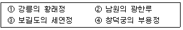
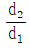
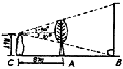
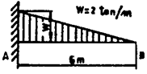

조경기사 (2002-03-10 기출문제)
1과목: 조경사
1. 다음 중 이탈리아 르네상스의 정원으로서 10개의 노단(Ten Terraces)으로 이루어진 바로크식 정원은?
- Villa Lante
- Villa Isola Bella
- Villa Farnese
- Villa Petraia
(정답률: 74%)

2. 일본 고산수 정원의 대표적인 것은?
- 용안사
- 계리궁
- 금각사
- 천룡사
(정답률: 76%)
3. 조선시대에 조영된 다음 보기의 지당정원 조영시대 순이 옳게 연결된 것은?

- ①-②-③-④
- ④-③-②-①
- ②-③-④-①
- ③-④-①-②
(정답률: 53%)
4. 진의 왕의지는 관직을 떠난 뒤 풍광이 명미한 난정에 벗을 모아 연회를 베풀었다. 난정기에 묘사된 정원기법은?
- 곡수법
- 자수법
- 축산법
- 원로법
(정답률: 68%)
5. 조선시대에 만들어진 지당 중심의 정원들 중 신선 사상을 배경으로 하는 전통정원 양식과 거리가 가장 먼 것은?
- 경복궁의 경회루정원
- 창경궁의 통명전정원
- 강릉 선교장의 활래정정원
- 남원의 광한루 정원
(정답률: 39%)
6. 영국에 프랑스식 정원양식을 도입하는데 공헌한 사람들이다. 다음 중 이와 관계없는 조경가는?(오류 신고가 접수된 문제입니다. 반드시 정답과 해설을 확인하시기 바랍니다.)
- 르노-트르
- 로-즈
- 페로
- 포-프
(정답률: 27%)
7. 고대 이집트의 조경에 가장 큰 영향을 미친 요소는?
- 자연 형세
- 왕권
- 나일강
- 종교
(정답률: 36%)
8. 18세기 영국에 전원풍경식으로 조경양식의 일대전환이 이루어진 주요 이유로서 가장 타당치 않은 것은?
- 문학적 표현의 사각적 표현
- 중국 정원양식의 영향
- 형상수에 대한 반동
- 이태리 총림(bosco)의 영향
(정답률: 58%)
9. 전통마을 중 하회마을의 형태를 山太極水太極의 형태라고 한다면 이와 같은 사상의 기본은 어디에 연유한 것인가?
- 음양사상
- 오행사상
- 풍수사상
- 유교상
(정답률: 66%)
10. 다음은 한국정원의 특징을 열거한 것이다. 거리가 먼 사항은?
- 중국정원의 영향을 많이 받았다.
- 공간의 처리가 직선적이다.
- 정원의 수법은 자연의 재창조를 목적으로 한다.
- 풍수지리설과 음양오행설의 영향을 받았다.
(정답률: 25%)
11. 고대 로마시대의 폼페이의 주택정원의 특징에 관한 다음 설명 중 잘못된 것은?
- 뜰은 건축물에 의하여 둘러싸여 있다.
- 페리스틸리움의 식재는 주로 오점식재법에 의해 행해졌다.
- 지스터스는 과수원이나 채소밭으로 구성되어 있으나 정원시설이 갖추어지는 일이 있다.
- 아트리엄에서는 식물을 심을 수 있도록 흙이 깔려있다.
(정답률: 58%)
12. 중국식 탑을 영국식 큐정원에 도입한 사람은?
- Alexander Pope
- William Chambers
- Joseph Addison
- Richard Steel
(정답률: 60%)
13. 중세 인도의 정원이 아닌 것은?
- 살리마르 바
- 타지마할
- 니샤트 바
- 체하르 바
(정답률: 38%)
14. 바빌론의 공중정원은 다음 중 어느 왕 때 만들어졌는가?
- 아메노피스 3세
- 하체프수트
- 다리우스 1세
- 네부카드네자르
(정답률: 68%)
15. 조선시대 궁궐조경에 곡수거형태가 남아있는 곳은?
- 창덕궁 후원 옥류천 공간
- 경복궁 후원 향원정 공간
- 창경궁 통영전 공간
- 경복궁 교태전 후원 공간
(정답률: 59%)
16. 자연풍경을 묘사한 축경 정원은?
- 북위의 화림원
- 수양제가 조영한 서원에 있는 북해정원
- 당나라의 대명궁원
- 북송의 만세산 정원
(정답률: 55%)
17. 일본의 다정원에서 볼 수 있는 세가지 주요 첨경요소는?
- 반교, 평교, 수미산(須彌山)
- 야박석, 칠보지, 구산팔해석(九山八海石)
- 관수석, 인공폭포, 오행석조
- 징검돌, 석등, 물그릇(쓰꾸바이)
(정답률: 70%)
18. 한국정원의 올바른 감상법은?
- 시각적으로 감상한다.
- 청각적으로 감상한다.
- 시, 청각적으로 감상한다.
- 오감을 통해 감상한다.
(정답률: 65%)
19. 4세기경 그리스의 대표적 주택과 그 정원인 Prione의 정원에 대한 설명이다. 잘못 설명된 것은?
- Megaron 타입의 내향식 주택구조였다.
- 주랑식 중정의 형태를 나타내고 있다.
- 중정바닥은 포장하지 않고 방향성 식물을 식재하였다.
- 조각상과 대리석 분수를 설치하였다.
(정답률: 64%)
20. 조선시대 사찰의 공간구성에 기본적으로 적용된 것으로 보이는 원칙이 아닌 것은?
- 계층적 질서의 추구
- 공간 상호간의 연계성추구
- 남북일직선 중심축의 설정
- 인간척도의 유지
(정답률: 44%)
2과목: 조경계획
21. 도시계획구역안에 거주하는 주민 1인당 도시공원 면적기준은?
- 3 - 6m2
- 6 - 8m2
- 8 - 10m2
- 12 - 15m2
(정답률: 44%)
22. 주어진 공간에 일정한 이용목적을 설정하고 그러한 이용목적에 가장 합리적인 배치를 하기 위해서는 여러 가지의 연결방식을 검토하는 과정을 무엇이라고 하는가?
- 기능분석
- 동선체계의 계획
- 토지이용계획
- 행태분석
(정답률: 34%)
23. 다음 조경계획분야에서의 컴퓨터 활용에 관한 설명중 틀린 것은?
- 지리정보체계(GIS)는 특히 분석단계에 유용하게 사용된다.
- CAD는 컴퓨터를 이용한 설계와 제도를 말한다.
- 지리정보체계는 그래픽과 이에 따른 속성자료를 연결시키고 있다.
- CAD는 분석과정에서 이용할 수 없다는 단점이 있다.
(정답률: 61%)
24. 조경계획을 설명한 것이다. 틀린 것은?
- 대단위 부지를 체계적으로 연구하여 자연과학적, 생태학적 측면을 강조해 시각적 쾌적성을 고려한다.
- 계획부지의 적절한 이용을 제시하거나, 계획된 이용에 적합한 부지를 판단한다.
- 부지 이용의 경제적 측면을 강조한다.
- 도면중첩법을 활용하여 토지적합성을 판단한다.
(정답률: 53%)
25. 환경영향평가에 관한 설명 중 잘못된 것은?
- 환경영향평가는 주로 개발에 따른 생태적 영향에 초점을 맞추고 있다.
- 추상적 가치 즉, 고공의 건강, 쾌적함, 미적인 질 등에 관한 정량적 분석이 어렵다.
- 환경파괴에 대한 지표를 확실하게 설정할 수 있어 개발행위의 명확한 경계를 규정할 수 있다.
- 환경영향평가는 개발이 시행되기 전에 행해진다.
(정답률: 36%)
26. 주거단지설계에 있어서 범죄예방을 위한 설계방법론을 제시한 사람은?
- 포티우스
- 뉴먼
- 라포포트
- 알렉산더
(정답률: 59%)
27. 다음 각 공원에 시설설치 면적기준 중 잘못된 것은?
- 어린이 공원 : 공원면적의 60% 이하
- 근린공원 : 공원면적의 40% 이하
- 도시자연공원 : 공원면적의 20% 이하
- 묘지공원 : 공원면적의 40%이하
(정답률: 34%)
28. 안전성을 고려한 수제부 계획이라고 할 수 없는 것은?
- 수제부를 계단형으로 하여 하상까지 연결되도록 한다.
- 수제부를 직선으로 높이 올려서 접근이 어렵게 한다.
- 수제부와 수면 아래를 연속된 완구배 법면으로 한다.
- 수면아래까지의 낙차를 줄이고 하안에서 어느 정도의 범위 내에서의 수심을 알게한다.
(정답률: 47%)
29. 관광지에 내방할 가능성을 지닌 사람들이 거주하는 범위로서 1차 시장이라고도 하는 관광권은?
- 유치권
- 행동권
- 보완권
- 경합권
(정답률: 50%)
30. 도시공원 및 녹지의 유형, 구조, 설치기준, 시설기준 등에 관해 적용되는 법률은?
- 도시계획법
- 도시공원법
- 국토건설 종합계획법
- 국토이용관리법
(정답률: 50%)
31. 산림 내의 도로의 시설, 운영과 조경, 사방 기타 산림토목의 시공을 산림조합에 의해 할 수 있도록 규정한 법규는?
- 산림법
- 산림조합법
- 국립공원법
- 자연공원법
(정답률: 36%)
32. 소규무의 공장조경시 공장의 고간구분에 해당되지 않는 것은?
- 직접제조 활용공간
- 자원설비 공간
- 후생지원 공간
- 수납처리 공간
(정답률: 34%)
33. 어느 주택단지의 규모가 200,000m2 이고 주거용 건물의 바닥 면적이 40,000m2, 평균층수가 8.5층 일 때 이 주택단지의 용적율은?
- 140%
- 150%
- 170%
- 250%
(정답률: 47%)
34. 미적반응과정이 올바른 것은?
- 자극선택 → 자극탐구 → 반응 → 자극해석
- 자극선택 → 자극탐구 → 자극해석 → 반응
- 자극탐구 → 자극선택 → 반응 → 자극해석
- 자극탐구 → 자극선택 → 자극해석 →반응
(정답률: 27%)
35. 자연공원의 각 지구별 자연보존 요구도의 크기순이 옳은 것은?
- 자연환경지구 > 자연보존지구 > 취락지구(자연,밀집) > 집단시설지구
- 자연보존지구 > 자연환경지구 > 취락지구(자연,밀집) > 집단시설지구
- 자연환경지구 > 자연보존지구 > 집단시설지구 > 취락지구(자연, 밀집)
- 자연보존지구 > 취락지구(자연, 밀집) > 집단시설지구 > 자연환경지구
(정답률: 55%)
36. 조경계획을 함에 있어 계획구역의 지형을 알기 쉽게 나타내기 위한 도면이 아닌 것은?
- 표고 분석도
- 경사 분석도
- 지형 단면도
- 토양 단면도
(정답률: 50%)
37. 묘지공원의 설계에 관한 설명 중 잘못된 것은?
- 장제장은 잘 보이지 않는 곳에 설치한다.
- 기존의 풍치는 잘 보존한다.
- 묘원의 외곽지대는 식수대를 설치한다.
- 광장, 휴게소 부근은 화단, 분수, 파고라 등을 설치한다.
(정답률: 40%)
38. 여가공간계획에 있어서 이용자 행태분석의 항목에 포함되지 않는 것은?
- 이용인구 규모
- 주 이용 대상지
- 체류시간
- 동반 유형
(정답률: 29%)
39. 시설물 배치계획에 관한 서술 중 옳지 않은 것은?
- 구조물의 평면이 장방형일 때는 긴 변이 등고선에 수직이 되도록 배치한다.
- 다른 시설물과 인접한 경우 구조물들로 형성되는 옥외공간의 구성에 유의해야 한다.
- 여러 기능이 존재하는 경우 유사기능의 구조물들을 모아서 집단별로 배치한다.
- 시설물이 랜드마크적 성격을 갖고 있지 않다면 주변경관과 조화되는 형태, 색채 등을 사용하는 것이 좋다.
(정답률: 59%)
40. 다음 서술 중 오픈스페이스를 잘못 정의하고 있는 것은?
- 지붕이 없이 하늘을 향해 열려있는 땅
- 개발되기를 기다리고 있는 땅
- 일상의 생활에서 벗어나 스스로를 재창조할 수 있는 곳
- 주변이 수직적인 요소로 둘러싸여 있는 공지
(정답률: 46%)
3과목: 조경설계
41. 사이클링 코스를 설계하려고 할 때 경사로의 최대 구배를 몇% 이하로 설정하여야 합리적인가?
- 3%
- 5%
- 8%
- 14%
(정답률: 34%)
42. 먼셀 표색계에서 5Y4/6은 일정한 느낌을 줄 수 있는 하나의 색을 나타낸다. 이 표시 중 4의 숫자는 무엇을 가르키는가?
- 색상
- 명도
- 채도
- 색명
(정답률: 54%)
43. 다음 중 좌우대칭의 장점이 아닌 것은?
- 개방, 노출
- 균형, 통일
- 율동, 안정
- 계획의 명료성
(정답률: 58%)
44. 외부공간에서 입면적 요소가 시계, 소음, 일조의 차단벽이 될 수 있는 최소의 높이 정도는?
- 3ft정도
- 5ft정도
- 7ft정도
- 9ft정도
(정답률: 35%)
45. 풍치 속에서 자연의 힘으로서 이루어진 독특한 심미적 조직의 양태를 발견하게 되는데 이것을 무엇이라고 하는가?
- 경관의 요소라 한다.
- 경관의 구성이라고 한다.
- 경관의 양식이라 한다.
- 경관의 성격이라 한다.
(정답률: 40%)
46. 자유곡선자에 관한 설명 중 틀린 것은?
- 작은 곡선을 그릴 때 사용하면 편리하다.
- 여러가지 곡선을 자유롭게 그릴 수 있다.
- 납이 들어있는 금속 고무재로 되어있다.
- 정확한 원호로 나타내기 힘들다.
(정답률: 43%)
47. Gorden Cullen이 도시경관 분석시 이용했던 분석개념에 해당되지 않은 것은 어느 것인가?
- 장소
- 연속적 경관
- 동일성
- 내용
(정답률: 31%)
48. 파노라믹 경관의 개념에 맞지 않는 것은?
- 전경 중경, 원경의 수평적 구도가 쉽게 식별된다.
- 앞에 가로막는 것이 없는 탁 트인 전망이다.
- 높은 산에 올라가면 많 볼수 있는 경관이다.
- 시야의 거리감이 없다.
(정답률: 35%)
49. 다음 항목 가운데 기하학적인 형태주제에 해당하지 않은 것은?
- 타원형
- 자유 나선형
- 동심원과 반지름형
- 호와 접선형
(정답률: 44%)
50. 미적 형식원리에 관한 설명으로서 틀린 것은?
- 시대, 민족, 장소, 개인에 따라 미의 법칙에는 변용성이 있다.
- 고대에는 비례의 정확성에서 미의 근원을 찾는 사례가 많았다.
- 비례, 대칭, 율동 등에는 미의 법칙성이 존재한다.
- 미의 법칙성은 조형예술에만 국한한 것이다.
(정답률: 56%)
51. 다음 중 유아놀이터에 대한 시설에 대한 시설배치의 설명을 바르게 한 것은?
- 모래밭 안에는 다른 시설물은 두지 않는다.
- 도섭지에는 경제적 이유와 편리상 음수대를 근처에 둘 수 없다.
- 회전그네, 미끄럼틀, 놀이집, 모래밭 등은 서로 가깝게 설치한다.
- 출입구에서 먼 곳에 설치한다.
(정답률: 24%)
52. 기본설계의 내용이 가장 잘 설명된 것은?
- 쉽게 판단할 수 있고 다소 매력적으로 표현하여야 한다.
- 기본계획의 골격에 벗어나지 않고 보다 구체적으로 부지에 결합시킬 수 있도록 작성한다.
- 시공에 필요한 각종 도면과 시방서를 작성한다.
- 디자인과 공법을 자세히 표현한다.
(정답률: 57%)
53. 도면 작성시 적용기준으로 틀린 것은?
- 재료의 종류를 구분하기 위해 표시기호는 꼭 사용하여야 한다.
- 재료는 규격, 종류, 마감가공방법 및 수량을 표기한다.
- 모든 치수는 마감치수를 원칙으로 한다.
- EXP, JT는 신축줄눈을 말한다.
(정답률: 30%)
54. 다음은 투시도에 관한 설명이다. 맞는 것은?
- 1점 투시도는 실내 투시도에 사용되는 것이며 외부공간을 다루는 조경설계에서는 사용되지 않는다.
- 2점 투시도는 건축투시도에 사용되지만 조경설계에 가장 잘 적용되는 대표적인 방법이다.
- 3점 투시도는 기계설계에 사용되는 것이며 조경설계에서는 세부상세를 보여주기에 적합한 방법이다.
- 조감도는 시점의 높이에 따라 공중에서 내려다 보이는 모습으로 나타나는 것으로 투시도의 한 종류이다.
(정답률: 47%)
55. 조형 작품에서 운동감을 표현하는 방법 중 맞지 않는 것은?
- 방향성을 갖게 하는 방법
- 위치와 간격의 변화를 나타내는 방법
- 공간상에 동일간격, 형으로 배치하는 방법
- 음영을 단계적으로 만드는 방법
(정답률: 34%)
56. 다음은 조경의 각종 포장설계에 대한 내용이다. 틀린 것은?
- 간이포장이란 임시로 개설되는 차도용 아스팔트 콘크리트 포장을 말한다.
- 조경 포장에는 보도용, 차도용 포장, 간이포장, 인조 잔디 등이 있다.
- 보도용 포장이란 보도, 자전거도, 공원 내 도로 등 주로 보행자에게 제공되는 도로 및 광장의 포장을 말한다.
- 차도용 포장이란 관리용 차량이나 한정된 일반차량의 통행에 사용되는 도로이며 최대 적재량 4톤 이하의 차량이 이용하는 도로의 포장을 말한다.
(정답률: 14%)
57. 바람이 부는 곳에는 3m 높이의 분수를 설치할 수 있는 경우 수조의 가장 적합한 크기는?
- 지름 2.5m
- 지름 5.5m
- 지름 8.5m
- 지름 11.5m
(정답률: 30%)
58. Barrier Free Dession 기준에 대한 설명 중 잘못된 것은?
- 휠체어 2대가 비껴갈 수 있는 노폭은 180㎝ 이상 되어야 한다.
- 휠체어 1대와 사람이 비껴갈 수 있는 노폭은 135㎝ 이상이어야 한다.
- 목발 이용자가 이용할 수 있는 노폭은 120㎝ 이다.
- 휠체어 1대가 통행할 수 있는 노폭은 70㎝ 이다.
(정답률: 60%)
59. 일정높이 이상의 목재펜스를 설치하기 위해서는 주요 말뚝에 콘크리트 기초를 하여야 한다. 0.9m 이상 1.8m 이하의 펜스를 설치할 때 요구되는 콘크리트 기초는?
- 15㎝ 이상
- 25㎝ 이상
- 35㎝ 이상
- 45㎝ 이상
(정답률: 25%)
60. 다음은 원지시설에 대한 설계기준이다. 옳지 않은 것은?
- 피크닉 원지의 단위 규모 : 15m2 / 인 이상
- 전망원지의 단위 규모 : 5m2 / 인 이상
- 적합한 자연 지형 : 10-12% 경사
- 원로의 적정 폭원 : 1.5-2.0 m
(정답률: 38%)
4과목: 조경식재
61. 다음 나무들 중 줄기가 적갈색계의 색채를 나타내는 것은?
- 가문비 나무, 히말라야시이다.
- 편백나무, 배종나무
- 소나무, 주목
- 백오동, 죽도화
(정답률: 57%)
62. 다음 중 녹지의 개념에 해당되지 않는 곳은?
- 도로용지
- 묘지
- 광장
- 운동장
(정답률: 38%)
63. 일반적으로 식재설계는 식물의 생리생태학적인 특성을 이용하여 식재하여야 한다. 다음 중 옳은 것은?
- 은방울꽃은 빛이 드는 양지에 식재하여야 한다.
- 벌개미취는 산림의 건조한 지역에 식재한다.
- 줄은 냇가나 습지에 식재한다.
- 예기부들은 물이 없는 곳에 식재한다.
(정답률: 49%)
64. 임해매립지의 식생환경에 대한 설명이다. 틀린 것은?
- 대부분 준설토 등의 재료를 이용하고 지하수위가 높아 가용성 염류와 나트륨이 과다 함유되어 염농도가 높다.
- 토양구조가 발달되지 않아 투수속도가 느리고 배수가 불량한 상태로 대부분 토양의 EC가 4ds/m이상이고 ESP가 15%이상.
- 조풍해, 겨울철의 강한 바닷바람과 여름철 태풍에 의한 피해 및 비사 등 바람에 의한 영향이 강하므로 이에 대한 대책을 수립하여야 한다.
- 불량한 토양조건의 극복을 위해 외부 반입의 양질 토로 1.5m이상을 성토하여 유효토심을 확보하면 염류토양을 극복할 수 있다.
(정답률: 47%)
65. 다음 중 관목식재의 기능으로 볼 수 없는 것은?
- 녹음 식재
- 기초 식재
- 산울타리 식재
- 가리개 식재
(정답률: 41%)
66. A지점의 소음수준은 50㏈ (A)이다. B지점은 A지점보다 음원으로부터 4배 멀리 떨어져 있다. 다음 식에 의해 소음 수준을 구하면 얼마인가? ( 단, D=L1-L2= 10 log10

, D=소음의 차이 L1, L2 : 각 지점의 소음도, d1, d2 : 음원으로부터의 거리)- 40㏈(A)
- 44㏈(A)
- 50㏈(A)
- 38㏈(A)
(정답률: 21%)
67. 임해매립지에 있어서 직접 바닷바람이 닿는 곳에 식재 할 수 있는 수종은?
- 생강 나무
- 개비자 나무
- 자작 나무
- 누운 향나무
(정답률: 42%)
68. 배식도면을 기호방식으로 그릴 때 장점이 아닌 것은?
- 도면에 배치하기 쉽다.
- 식물에 정확한 위치를 부여한다.
- 고도로 복잡해진 계획에 이용될 수 있다.
- 의뢰인이 아주 쉽게 이해한다.
(정답률: 34%)
69. 백목련을 접목시키고자 한다. 이때 어떤 나무를 대목으로 사용하는 것이 좋은가?
- 백목련
- 산목련
- 자목련
- 함박꽃나무
(정답률: 34%)
70. 개화기 순으로 옳은 것은?
- 개나리 - 매화 - 병꽃나무 - 배통나무
- 풍년화 - 개나리 - 해당화 - 배통나무
- 매화나무 - 고광나무 - 개나리 - 산수유
- 산수유 - 노각나무 - 명자나무 - 자귀나무
(정답률: 44%)
71. 다음 중 식재의 배식원리에 대한 설명이다. 틀린 것은?
- 통일성은 동질성을 창출하기위한 여러 부분들의 조화있는 결합을 말한다.
- 설계에서 단순함을 창조하는데 가장 중요한 요소는 균형이다.
- 변화는 강한 대비를 창출하기 때문에 부족한 듯하게 사용되어야 한다.
- 연속하는 식재군 내에 크기의 변화를 줌으로써 강조를 나타낼 수 있다.
(정답률: 18%)
72. 다음 중 아황산가스에 약한 수종으로 짝지은 것은?
- 소나무, 느티나무
- 가이즈까향나무, 광나무
- 소철, 유카
- 무궁화, 자귀나무
(정답률: 23%)
73. 다음 학명 중 생울타리용으로 가장 좋은 나무는?
- Thuja or ientalis L.
- Jniperus chinensis L.
- Taxus cuspidata S. et Z.
- Euonymus japonica Thunb.
(정답률: 50%)
74. 다음은 Salix Pseudo-lasiogyne Lev. 특성을 설명한 것이다. 틀린 것은?
- 수형은 하수형임
- 내공해성이 강함
- 이식이 용이하고 한국이 원산지임
- 심근성이므로 가로수로 적당함
(정답률: 39%)
75. 식물을 건축적으로 이용할 때 나타나는 기능은?
- 기상조절
- 방풍효과
- 토양침식의 조절
- 사생활 보호
(정답률: 49%)
76. 다음 중 식물군락을 성립시키게 될 내적요인으로 맞는 것은?
- 경합
- 토양미생물류
- 토양수분
- 광선
(정답률: 38%)
77. 다음 그림에 있어서 B지점의 건물을 차폐하려 한다. 나무의 높이는 얼마로 하면 좋은가?

- 4.94 m
- 5.48 m
- 6.32 m
- 7.64 m
(정답률: 25%)
78. 다음 중 조경 전용 컴퓨터 소프트웨어인 랜드캐드를 이용한 배식설계에 관한 설명 중 틀리는 것은?
- 같은 유형의 배식도면을 항상 꺼내어 볼 수 있다.
- 도면을 최초로 완성시키고자 작업할 때 상당한 시간이 걸린다.
- 지금도 프로그램 개발자들에 의해 프로그램의 개발이 계속되고 있다.
- 손으로 그린 것보다 더욱 실제처럼 보인다.
(정답률: 32%)
79. 수목을 차폐의 소재로 사용하기 위한 평가사항으로 적합하지 않는 것은?
- 바람과 태양의 이동방향
- 차폐대상의 계절적 경관 특성
- 관찰자의 움직임
- 차폐가 필요한 방향
(정답률: 30%)
80. 우리나라 삼림대 주 온대림에서 극성상(Climax)의 생태계에서 기후상 우점종을 이루어야 되는 수종은?
- Pinus densiflora S. et Z
- Pinus koraiensis S. et Z
- Populus davidiana Dode
- Carpinus laxiflora Blume
(정답률: 25%)
5과목: 조경시공구조학
81. 지형도에서 등고선에 관한 설명으로 옳은 것은?
- 계곡선은 지모상태를 명시하고 표고의 읽음을 쉽게하기 위해 주곡선 간격의 1/5거리로 표시한 곡성이다.
- 산배와 계곡이 만나 이들의 등고선니 서로 쌍곡선을 이루는 부분을 고개라고 한다.
- 등고선은 급경사지에서 간격이 넓고 완경사지에서는 좁다.
- 조고선은 주곡서만으로 지형을 완전하게 표시할 수 없을 때 주곡선 간격의 2배로 표시한 곡선이다.
(정답률: 22%)
82. 벽돌벽의 구조상 벽채, 바닥, 지붕 등의 하중을 받아 기초에 전달하는 벽은 다음 중 어느 것에 해당하는가?
- 내력벽
- 장막벽
- 중공벽
- 비내력벽
(정답률: 64%)
83. 다음은 인력운반공사에 대한 설명이다. 가장 부적합한 항목은 어느 것인가?
- 1일 운반 실작업시간은 8시간을 기준으로 480분을 적용한다.
- 경사지 운반거리는 별도 보정계수를 적용하며 수직 높이 1m는 수평거리 6m로 환산하여 적용한다.
- 지게 운반의 1회 운반량은 50㎏을 기준으로 산정한다.
- 손수레 운반은 1회 운반량을 250㎏을 기준으로 2인 1조로 계산한다.
(정답률: 48%)
84. 다음 살수기의 종류 중 가장 높은 압력에서 작동되며 살수범위가 가장 넓은 것은 어느 것인가?
- 분무살수기
- 분무입상살수기
- 회전살수기
- 회전입상살수기
(정답률: 55%)
85. 용벽에 작용하는 토압 중 자연지반에서 수평의 방향으로 작용하는 용력은 어떤 토압을 말하는가?
- 정지토압
- 주동토압
- 수동토압
- 활동토압
(정답률: 26%)
86. 도로의 토공계획에서는 비교적 동간격의 측점을 설정하고 지반고와 계획고, 성토고, 절토고를 계산하며 구배를 결정해 나간다. 이러한 도면을 무엇이라 부르는가?
- 도로 평면도
- 측점표면도
- 도로 횡단면도
- 노선 종단면도
(정답률: 32%)
87. 일정한 경사를 가진 노선(수평거리 36m)에 6% 구배의 계획선을 넣을 때 종점의 수직고는 얼마인가?
- 0.0216m
- 0.216m
- 2.16m
- 21.6m
(정답률: 63%)
88. 구조물에 하중이 작용하면 부재의 각 지점에는 무엇이 생기는가?
- 우력
- 합력
- 전단력
- 반력
(정답률: 41%)
89. 육상경기장 트랙의 포장재료로 이용되는 것으로 자연토에 마그네사이트를 혼합하여 염화마그네슘액으로 잘이겨 성형한 다음 800℃ 정도 구워 분취한 것은?
- 신더 혼합토
- 언트카
- 전천후형 탄력성 포장재료
- 실트
(정답률: 29%)
90. 미세기포의 작용에 의해 콘크리트의 워커빌리티와 동결융해에 대한 저항성을 개선시키는 것은?
- 포즐란
- A.E.제
- 지연제
- 촉진제
(정답률: 49%)
91. 평탄면의 마감높이를 평탄면이 지나지 않는 가장 높은 등고선보다 조금 높게 설치하여 평탄면을 통과하는 등고선보다 낮은 방향으로 그 지역을 둘러 싸돌고 등고선을 조작한다면 다음 평탄면 조성방법 중 어느 것에 해당하는가?
- 절토에 의한 방법
- 성토에 의한 방법
- 성, 절토에 의한 방법
- 옹벽에 의한 방법
(정답률: 14%)
92. 다음 중 공정표상에 명기해야 할 것이 아닌 것은?
- 재료의 발주시기
- 부분 공사명
- 공사의 진척상황
- 부분 공사별 책임자
(정답률: 41%)
93. 다음 그림에서 굽힘 모우멘트의 최대치는?

- -4 tㆍm
- -6 tㆍm
- -8 tㆍm
- -12 tㆍm
(정답률: 18%)
94. 초화류 파종과 식재품의 적용은 관목류나 잔디 식재품과는 별도로 적용해야 한다. 다음의 초화류 식재품에 대한 설명 중 적합한 내용은 어느 것인가?
- 초화류의 식재는 단위면적(m2)당 식재 주수를 정하고 100주당 식재품을 적용한다.
- 초화류 파종은 단위면적(m2)당 종자의 무게(g)를 산정하여 100m2 당 파종식재품을 산정한다.
- 초화류 식재는 보통인부를 기준으로 한다.
- 초화류 파종은 파종공 1인당 20m2를 기준으로 한다.
(정답률: 21%)
95. 유희시설의 하나인 미끄럼대에 관한 기술이다. 옳지 못한 것은?
- 미끄럼 대의 손잡이부분은 잘 다듬어져야 하고 각 부분의 곡율이 일정해야 한다.
- 미그럼 판을 스테인리스로 할 경우 접착부위는 반드시 전기용접을 해야한다.
- 착지면은 모래판 및 지면에서 10㎝ 이상 이격해서는 안된다.
- 미그럼판 주변을 목재로 할 경우 목재의 결을 활주방향으로 맞추어야 한다.
(정답률: 32%)
96. 다음은 Ι형보(Ι beam)의 특성을 설명한 사항이다. 틀린 것은?
- Ι형보는 구형보의 상단과 하단에만 인장응력이 집중하는 현상을 이용한 것이다.
- 이상적인 Ι형보는 구형보에 비해 3배정도의 하중을 견딜 수 있다
- 한 단면내에서 모든 부재의 두께를 동일하게 하는 것이 경제적이다
- 재료는 콘크리트보다 철재가 보편적이다.
(정답률: 13%)
97. 다음 시공관리 대한 설명 중 틀린 것은?
- 공사의 품질 및 공기에 대해 계약조건을 만족하면서 능률적이고 경제적 시공을 위한 것이다.
- 시공관리의 3대목표는 공정관리, 품질관리, 원가관리이다.
- 공정관리는 발주자 측에서 최소의 비용으로 최대의 생산을 올리기 위한 방법이다.
- 품질과 원가와의 관계는 품질은 좋게하면 원가는 높아지는 경향이 있다.
(정답률: 42%)
98. 배수에 대한 설명 중 옳은 것은?
- 배수관 배수방법에서 분류식 하수처리가 용이하고 매설시 비용이 적게 든다.
- 지하 배수시의 즐치형은 경기장 평탄지역에 적합하다.
- 배수계통에서 방사식은 좁은 지역에 유리하다.
- 지선배수시 분수령을 무시해도 좋다.
(정답률: 27%)
99. 다음은 옥외주차장의 구조에 관한 사항이다. 옳은 것은?
- 노상주차장은 종단구배가 4°이상의 도로에는 설치할 수 없다.
- 횡단구배를 연석쪽으로 낮게하는 것이 원칙이다.
- 출입구는 보행자의 통행에 지장이 없는 지점에 임의로 설치할 수 있다.
- 60°주차방식이 장시간 주차에 가장 적합하다.
(정답률: 19%)
100. 벽돌 반장쌓기로 할 때 입면 1m×1m 쌓는데 소요되는 벽돌은 몇 장인가?
- 65장
- 70장
- 80장
- 85장
(정답률: 12%)
6과목: 조경관리론
101. 미국 흰불나방의 천적은?
- 먹좀벌
- 긴등기생파리
- 무당벌레
- 풀잠자리
(정답률: 32%)
102. 3계절형 국립공원의 피크일 이용객수 추정을 위해 적용해야 할 피크일률은 다음 중 어느 것인가?
- 1/30
- 1/40
- 1/50
- 1/60
(정답률: 48%)
103. 다음 중 네트워크 공정표의 특징이 아닌 것은?
- 대형공사에서는 세부를 표현할 수 가 없다.
- 중점관리를 할 수 있다.
- 작성과 수정이 힘들다.
- 작업의 관계가 명확하다.
(정답률: 49%)
104. 식생공에 의한 비탈면 유지관리작업의 점검사항 중 잘못된 것은?
- 년 1회이상 시비 및 추비를 한다.
- 잡초제거 및 풀베기 작업을 실시하고 초장을 10㎝ 이하로 깍아주어야 한다.
- 관수 및 병충해 방제를 위해 수시로 예찰을 실시하고 방제한다.
- 비탈면 식생은 하단부보다 비탈면 어깨부분의 상태가 나쁘므로 중점 관리한다.
(정답률: 39%)
1⑤. 조경수목의 관수시 단위시간당 유실된 수분의 양(min, inch)을 표시하는 것은?
- ET
- pF
- pH
- C/N
(정답률: 30%)
106. 조경수목에서 굵은 가지솎기나 베어내기와 같이 수형을 다듬기 위한 강전정을 실시해도 나무의 손상이 적은 시기의 전정은?
- 춘기전정
- 하기전정
- 추기전정
- 동기전정
(정답률: 54%)
107. 경기장 잔디관리지짐서 작성시 포함해야 될 내용이 아닌 것은?
- 경기장 개요
- 관리장비운용지짐 및 장비관리 내역
- 연중 계절별 경기개최현황
- 농약 및 비료 살포지짐
(정답률: 34%)
108. 휴지통 배치시 고려해야 할 사항이 아닌 것은 ?
- 투입구의 높이는 60-75㎝가 바람직하다.
- 벤치 2-4개소마다 1개를 설치한다.
- 원로에는 30-60m에 1개를 설치한다.
- 휴지통도 점경물이므로 미적설계에 치중해야 한다.
(정답률: 53%)
109. 조경관리의 특성에 대한 설명 중 가장 잘못된 것은?
- 조경관리에 의해서는 형태로 취급되는 어떤 생산도 할 수 있다
- 관리대상의 기능이 유도성과 다양성을 지닌다.
- 관리대상의 시간경과에 따라 변하되폐허가 되지 않는다.
- 조경관리의 규격화, 표준화가 가능하다.
(정답률: 22%)
110. 제초제인 2.4-D의 특성을 설명한 것이다. 맞지 않는 것은?
- 무색의 결정으로 인축에 무해하다.
- 화본과 식물에는 해가 없다.
- 극히 낮은 농도에서도 식물을 고사시킨다.
- 호흡의 이상촉진을 발생시켜 식물을 고사시킨다.
(정답률: 14%)
111. 천공성 해충이 아닌 것은?
- 소나무 좀
- 박쥐나방
- 노랑쐐기나방
- 미끈이 하늘소
(정답률: 41%)
112. 공원관리비의 예산책정에 있어서 작업 전체비용이 30,000,000원이고 작업률이 3년에 1회일 때 단위연도의 예산은?
- 10,000,000 원
- 30,000,000 원
- 60,000,000 원
- 90,000,000 원
(정답률: 52%)
113. 관리의 시간적 계획에서 다음 중 1년을 주기로 하는 것은?
- 청소,순찰
- 순회,점검
- 수목관리
- 전면적인 도색
(정답률: 53%)
114. 금속의 부식환경에 대한 설명 중 틀린 것은?
- 금속에 미치는 기상요인 중 가장 문제가 되는 요인은 온도이다
- 습도 50%이하 에서는 금속의 부식은 거의 진행되지 않는다.
- 해안지대에서 해수입자에 의한 금속부식 영향권은 3㎞ 이내이다
- 금속의 녹슨 양은 그 지방의 기온의 정산치에 비례한다.
(정답률: 32%)
115. 낙엽성 활엽수의 질소(N)질 결핍현상을 바르게 설명한 것은?
- 조기 낙엽현상과 열매가 작아진다.
- 황화현상과 함께 잎이 말린다.
- 잎의 끝이 마르거나 뒤틀린다.
- 잎이 황록색으로 변하며 잎이 작고 적게 핀다.
(정답률: 34%)
116. 조경 시설물의 유지관리상 개량 및 개조가 요구되는 사항이 아닌 것은?
- 시설의 노후
- 주위환경의 변화
- 사회적 요구의 변화
- 관리자의 취향
(정답률: 57%)
117. 다음은 솔잎흑파리에 대한 설명이다. 틀린 것은?
- 소나무류에는 모두 피해를 입힌다.
- 우화최성기에 약제를 수간에 주입한다.
- 5월 중순부터 6월 하순까지 성충이 날아다닌다.
- 솔잎 속에 유충이 파고 들어간다.
(정답률: 35%)
118. 자연 레크레이션지역 조경관리의 가장 중요한 현실적 목표라고 인식되는 사항은?
- 자연환경의 보전
- 지속가능한 관리를 통한 이용효과의 증진
- 하자의 최소화
- 수목 및 시설물의 지속적 이용촉진
(정답률: 41%)
119. 균열폭이 0.2㎜ 이하의 균열부가 있을 때 하는 보수의 방법은?
- 메틸에틸케톤공법
- 표면 실링공법
- V 자형 절단공법
- 고무압식 주입공법
(정답률: 50%)
120. 다음 사항 중 위탁관리의 장점이 아닌 것은?
- 관리주체가 보유해야 할 담당 인원을 줄일 수 있다.
- 작업내용이 특수한 기술, 설비를 필요로 할 경우의 예산절감효과가 있다.
- 작업내용이 법령등에 의해 의무화 되어 있을 경우 인력축소가 가능하다.
- 관리주체의 취지가 잘 반영되고 관리책임이 명확해진다. 나가
(정답률: 61%)